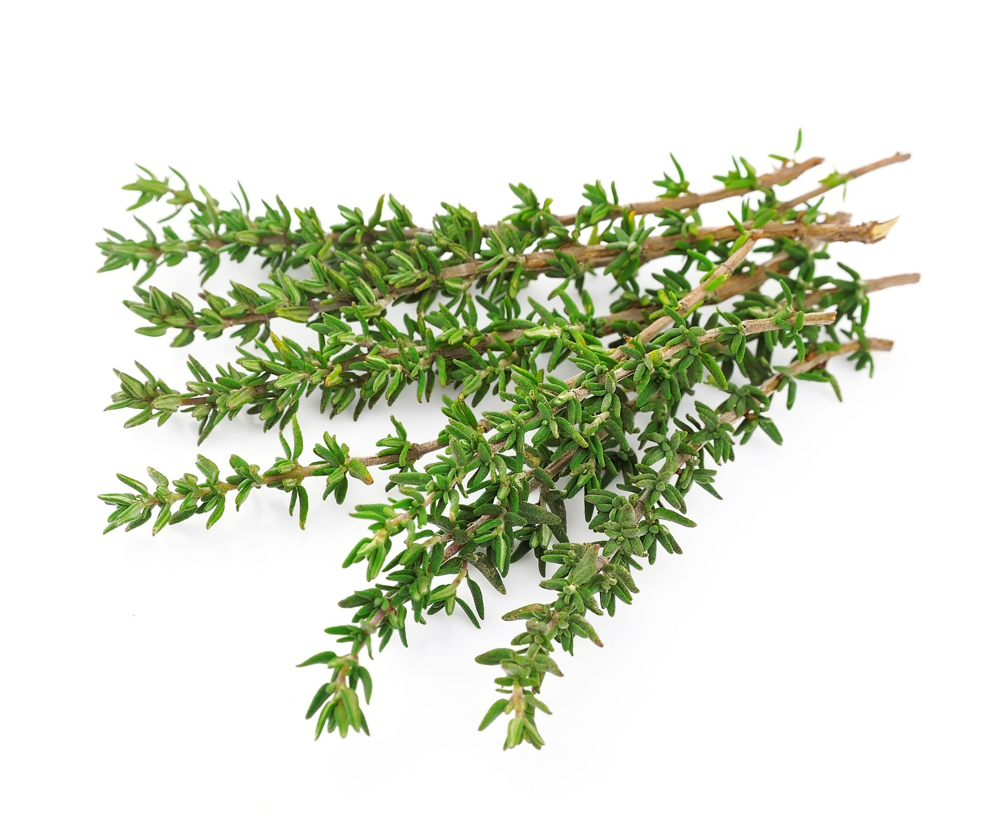

Imágenes de la Flora de Jaén

Romero (Rosmarinus officinalis)

Olivar (Olea europaea)

Tomillo (Thymus vulgaris)
Tabla de Especies
| Nombre Científico | Nombre Común |
|---|---|
| Rosmarinus officinalis | Romero |
| Olea europaea | Olivar |
| Thymus vulgaris | Tomillo |